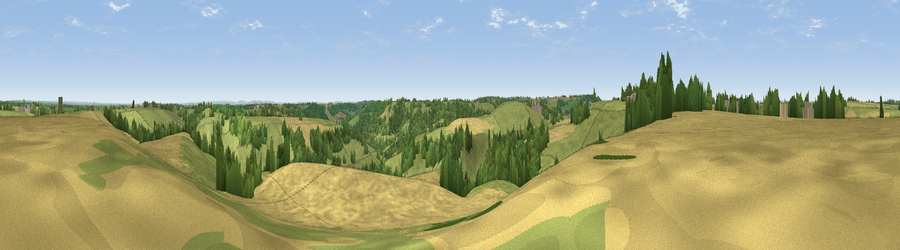

Viewpoint near Marshfield
#16123 in England · top 25% of its area beats it · near MarshfieldWhere it is
The exact computed spot (ST 75525 72725). Click the marker for map links.
The view, rendered

A 360° render of this exact spot computed from the terrain model, tree cover and land cover — summer colours, afternoon light, calibrated against photographs of famous viewpoints. Real trees, hedges and buildings will differ in detail.
The panorama
Grey silhouette: terrain skyline in each direction (720 bearings, Earth curvature and refraction included). Dashed green: skyline with trees (+15 m) and buildings (+8 m) as obstacles. Blue strip: how far the ground is visible on each bearing.
Where the view opens
Wedge length = distance to the farthest visible ground on that bearing (vegetation-aware). Rings at 10, 25 and 50 km.
What fills the view
49% grassland · 33% cropland · 17% woodland ·
Angular shares of the visible panorama (visual magnitude), not map area. Landscape diversity 0.45 (0–1 Shannon).
Key numbers
More beautiful places nearby
The staircase of upgrades: each row has a higher view potential than everything closer. Driving times are estimates from straight-line distance, calibrated against real road routing — check an actual route before setting out.
| Place | Direction | Drive | Score |
|---|---|---|---|
| Viewpoint near Doynton | NW · 2 km | ~5 min | 62.9 |
| Viewpoint near Hinton | N · 5 km | ~11 min | 65.9 |
| Hanging Hill | WSW · 5 km | ~11 min | 76.4 |
| Viewpoint near Stinchcombe | N · 25 km | ~41 min | 80.5 |
| Nottingham Hill | NNE · 60 km | ~82 min | 80.9 |
| Garway Hill | NNW · 61 km | ~84 min | 84.6 |
| Millennium Hill | N · 67 km | ~90 min | 86.9 |
| Viewpoint near West Quantoxhead | WSW · 70 km | ~93 min | 87.9 |
51.45297, -2.35362 · source: screening · position refined by local search. Computed location — check access rights before visiting.